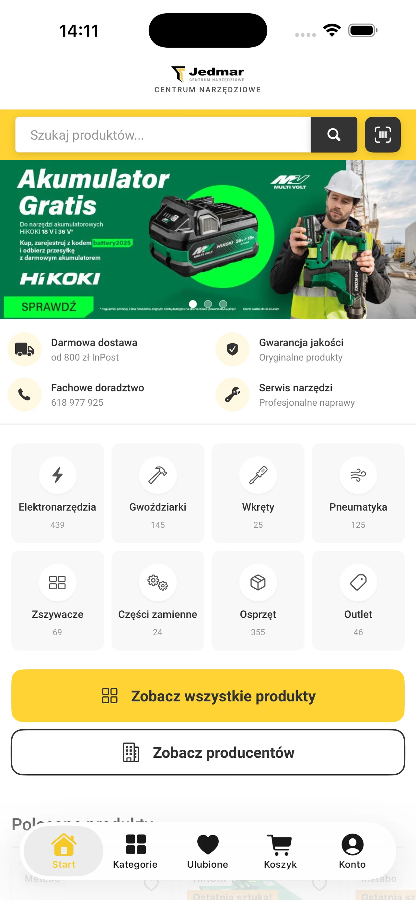
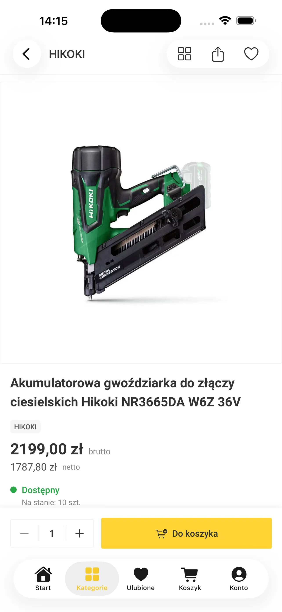

Jedmar
Dwie natywne aplikacje i moduł schematów części
Centrum narzędziowe z Poznania z katalogiem ponad 1400 pozycji. Zbudowaliśmy aplikacje na iOS i Androida spięte z istniejącym sklepem: katalog, koszyk, płatności, skaner kodów EAN. Obie są w App Store i Google Play.